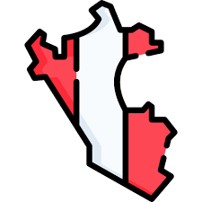
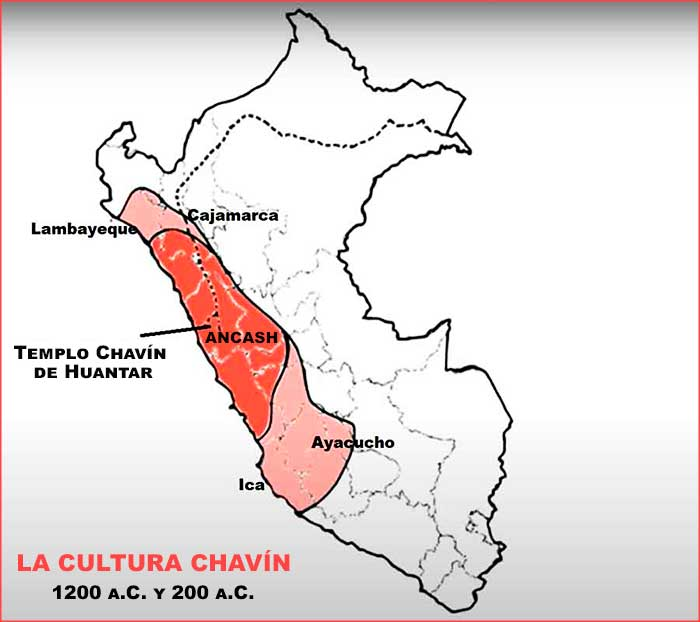

Ubicación Detallada de la Civilización Chavín 
La civilización Chavín floreció en una región estratégica de los Andes septentrionales del actual Perú. Su núcleo geográfico se centró en:
- Callejón de Conchucos: Este valle interandino, formado por el río Mosna, fue el corazón de la civilización Chavín. Su ubicación en la vertiente oriental de la Cordillera Blanca le otorgaba una conexión vital entre diferentes ecosistemas andinos.
- Confluencia de los Ríos Mosna y Huachecsa: El centro principal y epónimo, Chavín de Huántar, se estableció precisamente en la unión de estos dos ríos. Esta confluencia no solo aseguraba el acceso a recursos hídricos esenciales para la agricultura y la vida, sino que también pudo haber tenido un significado simbólico y ritual importante en su cosmovisión.
- Provincia de Huari, Región Áncash: En términos de la división política actual del Perú, esta área corresponde a la provincia de Huari, dentro de la importante región de Áncash.
- Altitud Estratégica (3180 msnm): La elevación de Chavín de Huántar, a aproximadamente 3180 metros sobre el nivel del mar, le permitía acceder a una variedad de recursos ecológicos presentes en los diferentes pisos altitudinales andinos.
- "Nudo de Caminos" Andino: Su ubicación no fue casual. Chavín de Huántar se convirtió en un punto de conexión crucial entre la costa del Pacífico, la sierra andina y las rutas hacia la Amazonía a través del río Marañón. Esta posición estratégica facilitó el intercambio cultural, religioso y posiblemente comercial con otras sociedades de la época.
El Centro Principal: Chavín de Huántar 
Chavín de Huántar fue mucho más que un simple asentamiento; fue el epicentro religioso y ceremonial de esta influyente civilización:
- Centro Ceremonial y de Peregrinación: Este sitio atraía a personas de diversas regiones andinas para participar en rituales, rendir culto a sus deidades y consultar oráculos. Su prestigio trascendió las fronteras geográficas cercanas.
- Arquitectura Lítica Monumental: Chavín de Huántar es famoso por su impresionante arquitectura en piedra, que incluye templos complejos como el Templo Antiguo y el Templo Nuevo, plazas ceremoniales, y un intrincado sistema de galerías subterráneas.
- Arte Lítico Singular: Las esculturas monolíticas encontradas en el sitio, como el icónico Lanzón Monolítico, el Obelisco Tello y las enigmáticas Cabezas Clavas, son expresiones artísticas únicas que reflejan la compleja cosmovisión Chavín.
Extensión de la Influencia Chavín 
Si bien el núcleo de la civilización se encontraba en Áncash, su impacto cultural y religioso se extendió significativamente a lo largo del territorio peruano:
- Amplia Zona de Influencia: Se han hallado evidencias arqueológicas de la influencia Chavín en una vasta área que abarca desde los actuales departamentos de Lambayeque y Cajamarca en el norte, hasta Ica y Ayacucho en el sur.
- Mecanismos de Difusión Cultural: La expansión de la influencia Chavín se cree que se debió principalmente a la fuerza de sus ideas religiosas y culturales, el prestigio de su centro ceremonial, y posiblemente a redes de intercambio y comercio. No se trató de una expansión militar o política centralizada en el sentido tradicional.
- Sitios con Rasgos Chavín: Numerosos sitios arqueológicos a lo largo de la costa y la sierra peruana presentan elementos arquitectónicos, iconográficos y artísticos que evidencian la presencia o la fuerte influencia de la civilización Chavín. Estos sitios sugieren una red de centros conectados o influenciados por el poder cultural y religioso emanado de Chavín de Huántar.
En conclusión, la ubicación estratégica de la civilización Chavín en el Callejón de Conchucos, y particularmente de su centro en Chavín de Huántar, fue un factor clave en su desarrollo y en la posterior difusión de su rica cultura e iconografía a lo largo de los Andes Centrales.